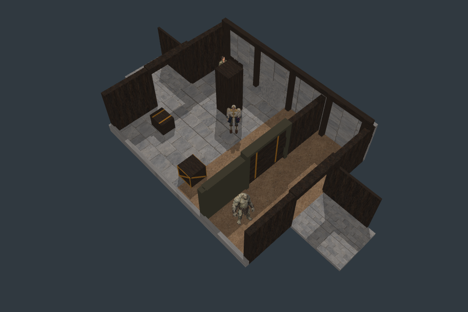
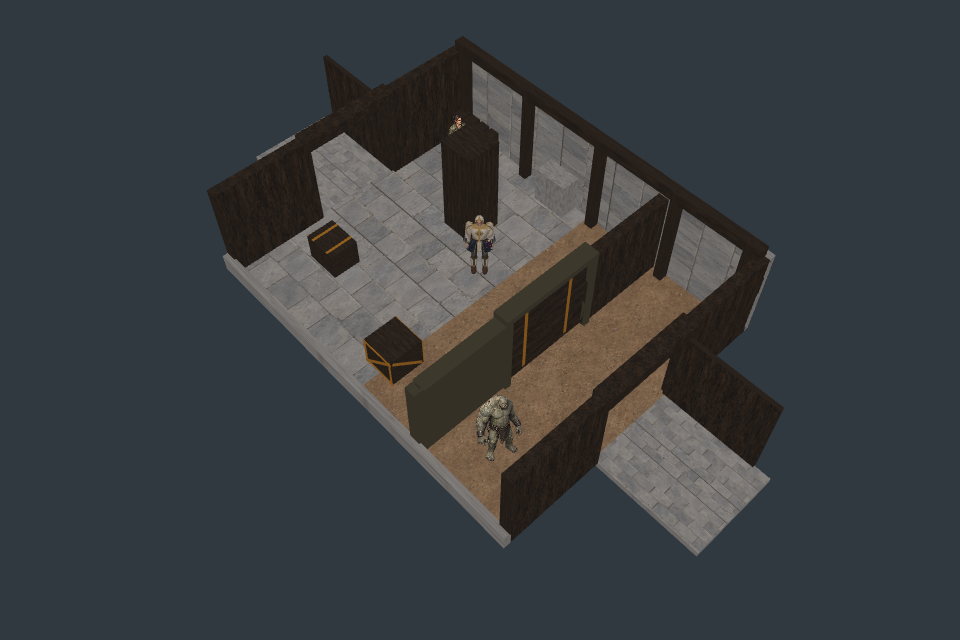
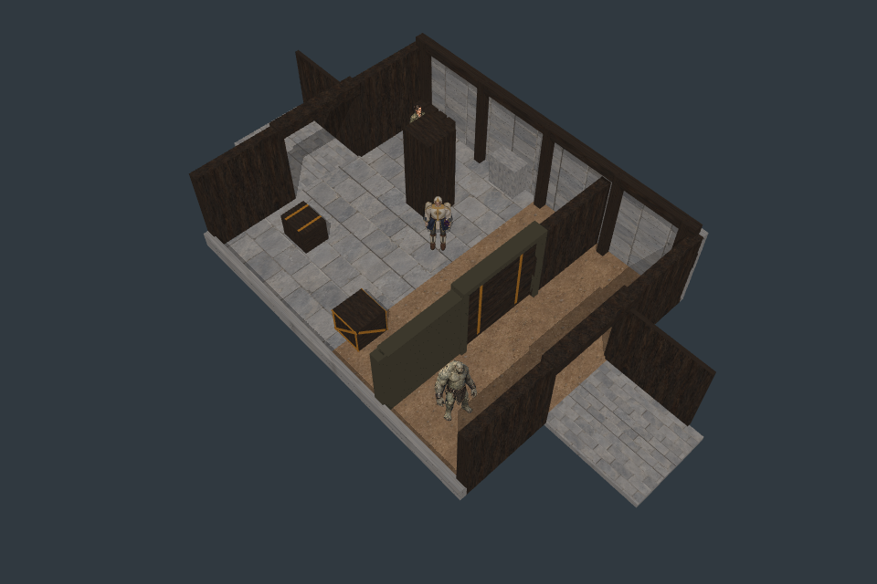
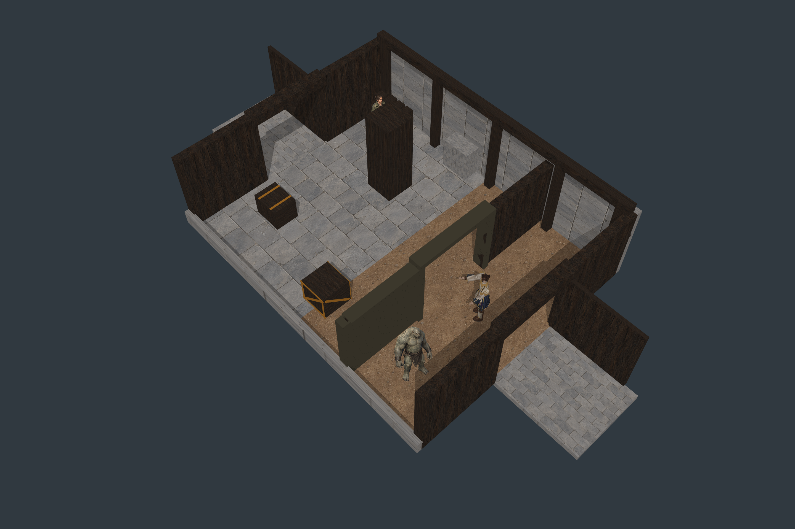

Godot shipping target; Pixi harness. Compiler gate passes. All 864 available floor/vertical witnesses pass after the stricter source edge guard. Two native pilot samples still FAIL out of 1,302 total. Several pilot groups remain too small to qualify. E07C remains the working chamber.
Original 29/1,336 failures are retained. The repaired source guard requires the same object and stable vertical normal across neighboring/subpixel positions; no rendering threshold changed. Missing/stale controls are detected and reversed caster order is invariant. No final art or full self-shadow PASS is claimed.
Report · Original failing matrix · Stricter matrix and remaining failures · Source/GPU depth diagnosis



Rerasterized 2880 × 1920, displayed smaller here; click for original pixels.

Next E07G tests receiver-plane lookup at the actual map texel center. The existing bias, source and numerical acceptance remain fixed. No further build is made in E07F.